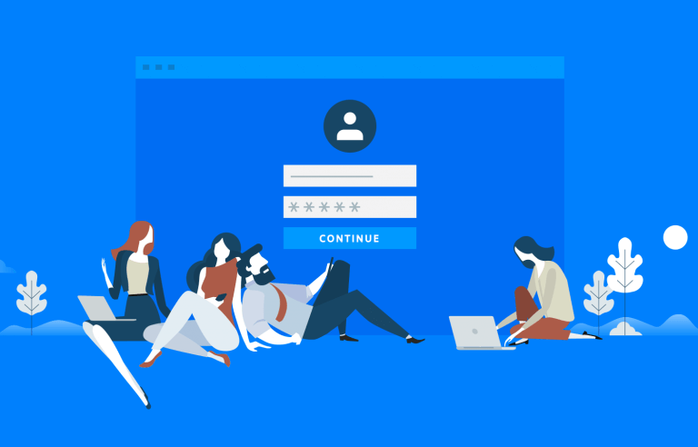
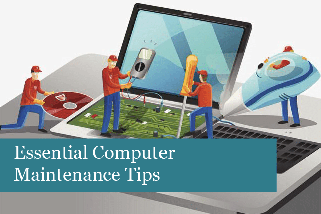

Through our blog, we share our experiences, learnings, and insights as we grow in the field of Information Technology. Here are some topics we write about:
We talk about our journey in building websites, the challenges we faced, and tips for beginners starting in HTML, CSS, and Bootstrap.

We share simple tutorials and best practices in creating secure and functional login systems for small applications.

We provide basic guides and advice on how to take care of your computer systems, troubleshoot common problems, and keep them running smoothly.
Our goal is to inspire and help other students and beginners by sharing what we learn every step of the way. Stay tuned for more updates and tech stories from our journey!